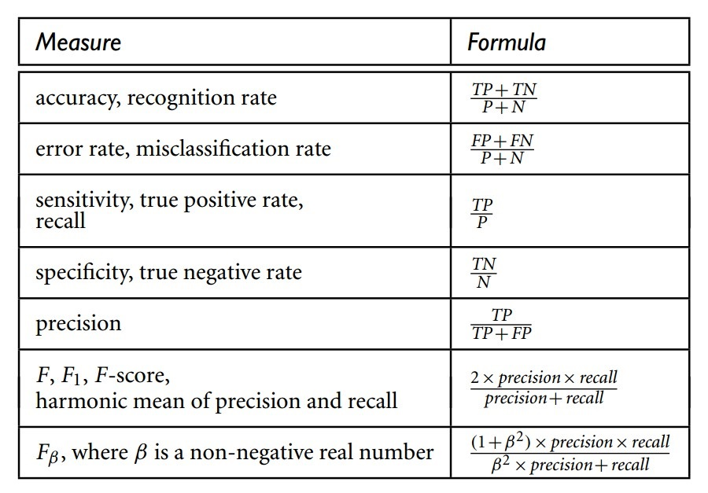
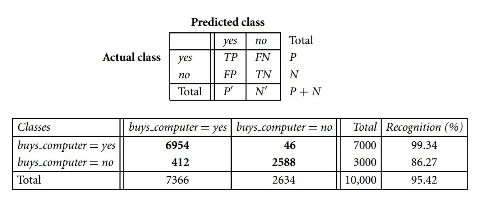

数据挖掘入门(5-5)
吐槽一下，数据不是想挖掘就能挖掘的，必须有大量的数据放在那。有了数据也不好挖掘，必须先预处理一下，需要的话需要放到数据仓库。是的，这样的话就可以开挖了。不要高兴的太早，挖出来了是要评估的，你以为挖出来的都是金子呀。是金子又怎么样，你要想想如何更好的表达给决策者，你懂不代表他懂。如果有一天完美的呈现出最终的知识表达，那可以歇一歇睡觉了。
重新认识数据挖掘
可以看到，在数据挖掘前和数据挖掘后都要做好多工作，真心不容易。所以，我们应该好好挖掘。
问题是，挖掘什么？从数据里挖掘什么？
前面说到，挖掘的是知识，有价值的东西。尽管目前只挖到了一下关联规则、分类模型。总体来说，数据挖掘的任务只有两类。
- 预测任务：这些任务的目标是根据其他属性的值，预测特定属性的值（回归和分类）
- 描述任务：其目标是导出概括数据中潜在联系的模式（关联分析、聚类、序列分析、离群点等）
数据挖掘预测与周易预测有相似之处。周易建立在阴阳二元论基础上，对天地万物进行性状归类（天干地支五行论），精确到可以对事物的未来发展做出较为准确的预测。（来自这里）
所以，数据挖掘能“知过去未来”。所以，数据挖掘相当于是“半仙”了。但是，“知”的准不准，还是人说了算，数据挖掘本身是死的。
预测（Prediction）
“知未来”靠的就是预测。其实，前面说的分类也是一种预测（预测分类标号），所以，广义的预测应该是包括分类的，也包括以下要说的内容。
这里说的预测是一种狭义的预测，预测的是连续的值，对比来看，分类预测的是离散的值。
但是，分类和预测还是很相似的。两者都是通过模型来评估（预测）未知的值，
预测是构造和使用模型评估无关样本，或评估给定样本可能具有的属性或值空间。
预测其实就是一种估计啦，主要的估计方法是回归分析。
回归分析又分为线性回归、多元回归、非线性回归。
线性回归就是最简单的一次函数$y=ax+b$，通过一条直线来拟合数据。
多元回归涉及到多个自变量，如$y=a+bx_1+cx_2$。多元回归是在多维空间中进行数据的拟合，同样是使用直线。
有些数据使用直线不太好拟合，所以就有了非线性回归，如$y=a+bx_1+cx_2^2+dx_3^3$。
其实，思想都是使用一个回归方程来拟合数据。只要找到能够拟合现在数据的方程，就可以“知未来”，因为x的取值就不仅仅可以取样本数据的值了。
所以，关键是找到这样的回归方程，其实就是求a、b这样的参数。对于线性回归、多元回归，都可以使用最小二乘法求参数。
而非线性回归，可以使用多项式回归建模的方法，进行变量变换，将非线性模型转换为线性模型再求解。
补充
搞出来这么多分类器，我们还是要评估一下分类器好不好。所以需要有一些度量（Measures）评估分类器。
分类器分出来的不外乎两种类型：分错了，分对了。而我们比较关注感兴趣的类，所以可以细分为四类：感兴趣的类分对了、感兴趣的类分错了、不感兴趣的类分对了、不感兴趣的类分错了。
专业一点的名称是真正例（TP）、假正例（FP）、真负例（TF）、假负例（FP）。
继续着四个度量，有了一系列公式，如下图。

为了帮助分析，有人搞出了一个混淆矩阵（Confusion matrix），通过这个矩阵可以比较有条理的看这些度量。混淆矩阵及示例如下图。

PS：对于这些公式实在是没什么可说的~混淆矩阵就是一矩阵啦，通过看这个矩阵，比看公式方便多了，比较容易看出分类器有没有混淆了两个类。
结尾吐槽，想挖到好很难。挖出来了还需要评估，评估不难，但是很麻烦有木有。
-- EOF --